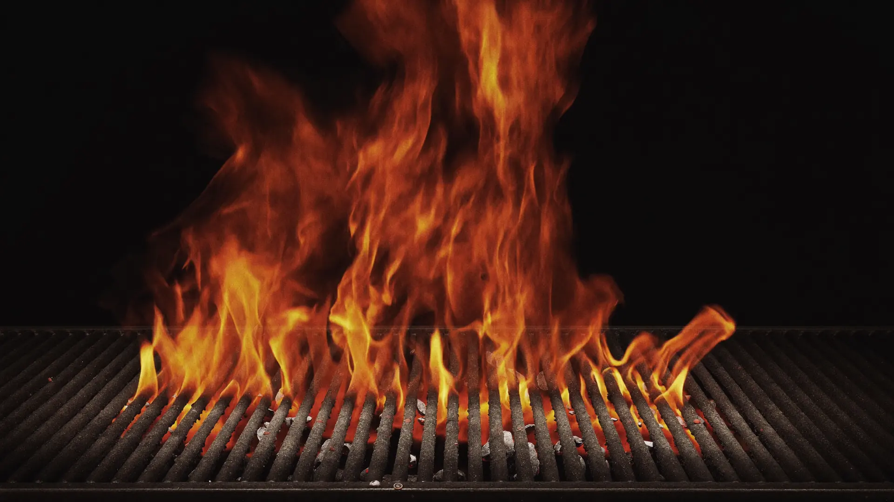
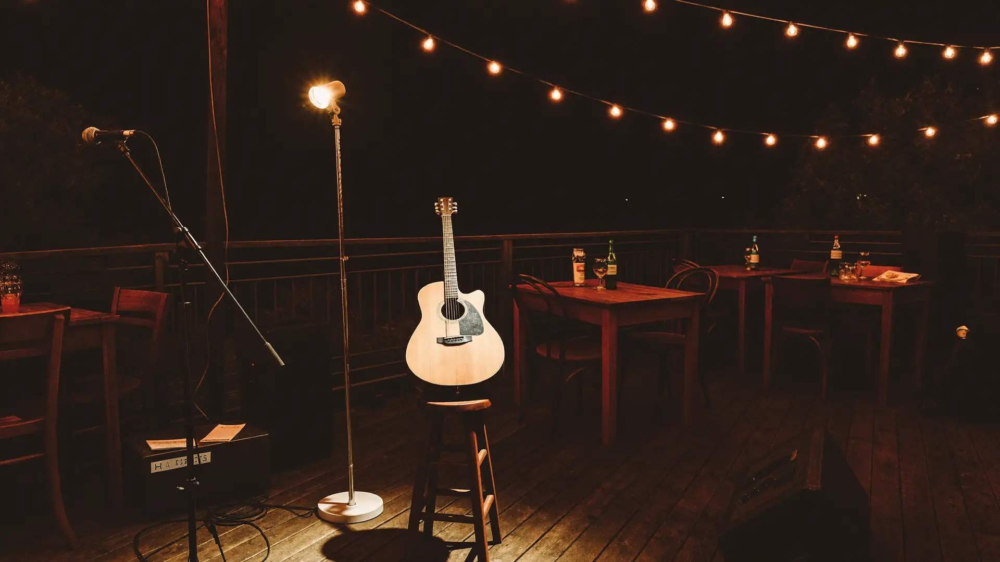
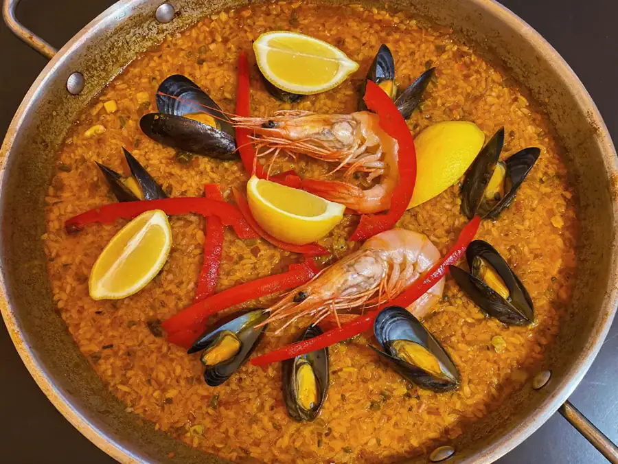

Café y restaurante de brasa en la Avinguda Riells. Arroces, marisco y, en verano, música en vivo cada miércoles.

La casa
Pinxu i Tragu es café y restaurante de brasa, en la Av. Riells, 102, en la zona de playa de L'Escala. Sala, para llevar y a domicilio, abierto hasta las 23:30 — de los que aguantan más tarde que la mayoría.
Es un negocio dirigido por una mujer, y así consta en su propia ficha. 794 personas han dejado su opinión, con una media de 4,1 sobre 5, y 148 han confirmado el rango de precio de la casa.
Los miércoles
Empieza la música
Lo anuncia la propia casa. Ahora mismo solo se entera quien ya la sigue: no aparece en ningún sitio donde alguien lo pueda buscar antes de decidir dónde cenar.

Cocina
Los platos que la gente nombra y fotografía. Los dos marcados son los que Google señala como platos populares de la casa.

Cómo llegar
En la Avinguda Riells de L'Escala. En sala, para llevar y a domicilio.
Llamar ahora Abrir en MapsPreguntas frecuentes
Todos los miércoles de julio y agosto, a partir de las 21:30.
Hasta las 23:30, más tarde que la mayoría de la zona.
De 20 a 30 € por persona. Lo han confirmado 148 personas en Google.
Las dos cosas. En sala, para llevar y a domicilio.
En la Avinguda Riells, 102, en la zona de playa de L'Escala. El código Plus es 447V+R7.